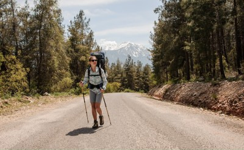
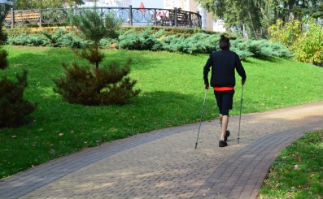
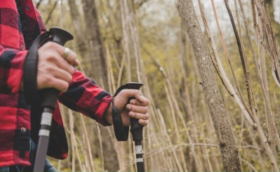
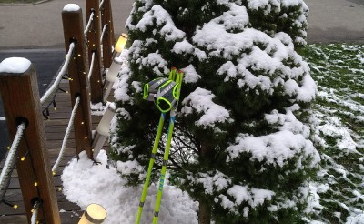
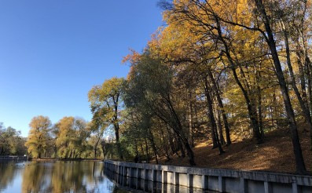
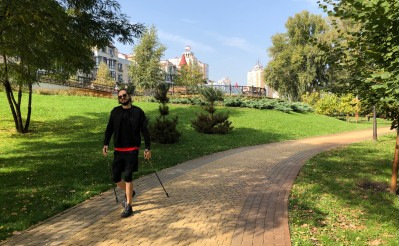

Про нордік та клуб NordiGo

Особистий досвід: як я полюбив нордік
Дізнатися більше
Нордік: з чого почати тренування
Дізнатися більше
Особистий досвід: чому нордік
Дізнатися більше
Топ-10 місця для занять нордіком у Києві
Дізнатися більше